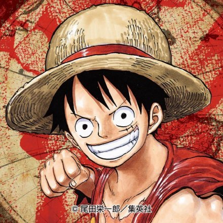
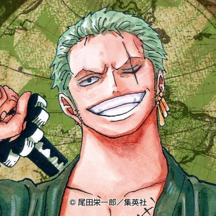
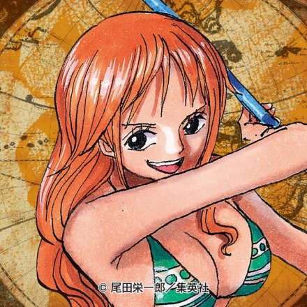
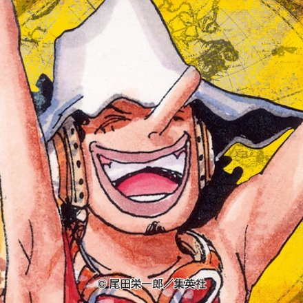
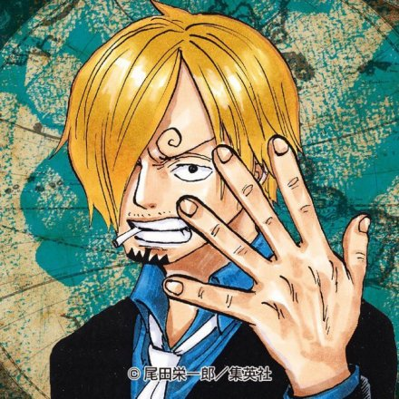
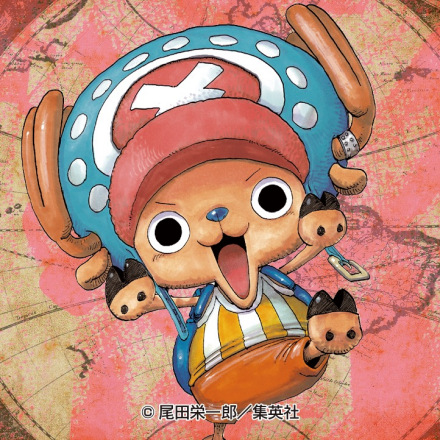
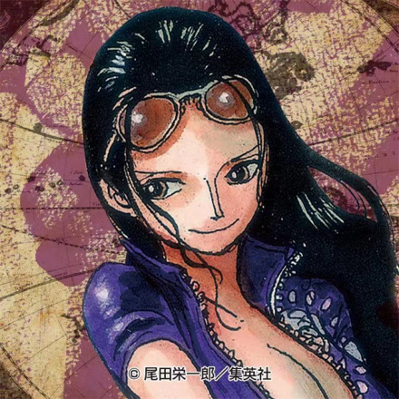

|  |
蒙奇·D·路飞，日本漫画《航海王》及其衍生作品中的男主角，绰号“草帽”路飞。
|
|---|---|
|  |
罗罗诺亚·索隆，“草帽一伙”的战斗员，外号“海贼猎人”。东海出身，悬赏金11亿1100万贝里。“草帽一伙”第一位加入的成员，与船长路飞一样是被称作“极恶的世代”中登陆香波地群岛的11位超新星的其中一位。是使用三把刀战斗的三刀流剑士，梦想成为“世界第一大剑豪”，以此为目标在大海上航行。 |
|  |
娜美，“草帽一伙”的航海士，外号“小贼猫”。东海出身，悬赏金3亿6600万贝里。使用天候棒结合气象科学进行战斗。“草帽一伙”第二位加入的成员。 梦想绘制“全世界的地图”，以此为目标在大海上航行。 |
|  |
乌索普，“草帽一伙”的狙击手，外号“狙击之王”、“GOD·乌索普”。东海出身，悬赏金5亿贝里。使用特制弹弓和植物弹药进行战斗。“草帽一伙”第三位加入的成员。梦想“成为勇敢的海上战士”，以此为目标在大海上航行。 |
|  |
山治，“草帽一伙”的厨师，外号“黑足”。北海出身，悬赏金10亿3200万贝里。使用踢技和杰尔马战斗服进行战斗。“草帽一伙”第四位加入的成员。梦想“找到传说中的海域·All Blue”，以此为目标在大海上航行。 |
|  |
乔巴，“草帽一伙”的船医，外号“爱吃棉花糖的乔巴”。伟大航路出身，悬赏金1000贝里。是食用了人人果实的驯鹿。“草帽一伙”第五位加入的成员。梦想“成为万能药”，以此为目标在大海上航行。 |
|  |
罗宾，“草帽一伙”的考古学家，外号“恶魔之子”。西海出身，悬赏金9亿3000万贝里。食用了花花果实的能力者。“草帽一伙”第六位加入的成员。梦想“找到空白的100年历史”，以此为目标在大海上航行。 |
|
Others |
...... |